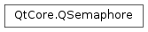

QSemaphore¶
Synopsis¶
Functions¶
- def
acquire([n=1]) - def
available() - def
release([n=1]) - def
tryAcquire([n=1]) - def
tryAcquire(n, timeout)
Detailed Description¶
The
PySide2.QtCore.QSemaphoreclass provides a general counting semaphore.A semaphore is a generalization of a mutex. While a mutex can only be locked once, it’s possible to acquire a semaphore multiple times. Semaphores are typically used to protect a certain number of identical resources.
Semaphores support two fundamental operations,
PySide2.QtCore.QSemaphore.acquire()andPySide2.QtCore.QSemaphore.release():
- acquire(n) tries to acquire n resources. If there aren’t that many resources available, the call will block until this is the case.
- release(n) releases n resources.
There’s also a
PySide2.QtCore.QSemaphore.tryAcquire()function that returns immediately if it cannot acquire the resources, and anPySide2.QtCore.QSemaphore.available()function that returns the number of available resources at any time.Example:
sem = QSemaphore(5) # sem.available() == 5 sem.acquire(3) # sem.available() == 2 sem.acquire(2) # sem.available() == 0 sem.release(5) # sem.available() == 5 sem.release(5) # sem.available() == 10 sem.tryAcquire(1) # sem.available() == 9, returns true sem.tryAcquire(250) # sem.available() == 9, returns falseA typical application of semaphores is for controlling access to a circular buffer shared by a producer thread and a consumer thread. The Semaphores Example shows how to use
PySide2.QtCore.QSemaphoreto solve that problem.A non-computing example of a semaphore would be dining at a restaurant. A semaphore is initialized with the number of chairs in the restaurant. As people arrive, they want a seat. As seats are filled,
PySide2.QtCore.QSemaphore.available()is decremented. As people leave, thePySide2.QtCore.QSemaphore.available()is incremented, allowing more people to enter. If a party of 10 people want to be seated, but there are only 9 seats, those 10 people will wait, but a party of 4 people would be seated (taking the available seats to 5, making the party of 10 people wait longer).
-
class
PySide2.QtCore.QSemaphore([n=0])¶ Parameters: n – PySide2.QtCore.intCreates a new semaphore and initializes the number of resources it guards to
n(by default, 0).
-
PySide2.QtCore.QSemaphore.acquire([n=1])¶ Parameters: n – PySide2.QtCore.intTries to acquire
nresources guarded by the semaphore. Ifn>PySide2.QtCore.QSemaphore.available(), this call will block until enough resources are available.
-
PySide2.QtCore.QSemaphore.available()¶ Return type: PySide2.QtCore.intReturns the number of resources currently available to the semaphore. This number can never be negative.
-
PySide2.QtCore.QSemaphore.release([n=1])¶ Parameters: n – PySide2.QtCore.intReleases
nresources guarded by the semaphore.This function can be used to “create” resources as well. For example:
sem = QSemaphore(5) # a semaphore that guards 5 resources sem.acquire(5) # acquire all 5 resources sem.release(5) # release the 5 resources sem.release(10) # "create" 10 new resources
PySide2.QtCore.QSemaphoreReleaseris a RAII wrapper around this function.
-
PySide2.QtCore.QSemaphore.tryAcquire([n=1])¶ Parameters: n – PySide2.QtCore.intReturn type: PySide2.QtCore.boolTries to acquire
nresources guarded by the semaphore and returnstrueon success. IfPySide2.QtCore.QSemaphore.available()<n, this call immediately returnsfalsewithout acquiring any resources.Example:
sem = QSemaphore(5) # sem.available() == 5 sem.tryAcquire(250) # sem.available() == 5, returns false sem.tryAcquire(3) # sem.available() == 2, returns true
See also
-
PySide2.QtCore.QSemaphore.tryAcquire(n, timeout) Parameters: - n –
PySide2.QtCore.int - timeout –
PySide2.QtCore.int
Return type: PySide2.QtCore.boolTries to acquire
nresources guarded by the semaphore and returnstrueon success. IfPySide2.QtCore.QSemaphore.available()<n, this call will wait for at mosttimeoutmilliseconds for resources to become available.Note: Passing a negative number as the
timeoutis equivalent to callingPySide2.QtCore.QSemaphore.acquire(), i.e. this function will wait forever for resources to become available iftimeoutis negative.Example:
sem = QSemaphore(5) # sem.available() == 5 sem.tryAcquire(250, 1000) # sem.available() == 5, waits 1000 milliseconds and returns false sem.tryAcquire(3, 30000) # sem.available() == 2, returns true without waiting
See also
- n –
© 2018 The Qt Company Ltd. Documentation contributions included herein are the copyrights of their respective owners. The documentation provided herein is licensed under the terms of the GNU Free Documentation License version 1.3 as published by the Free Software Foundation. Qt and respective logos are trademarks of The Qt Company Ltd. in Finland and/or other countries worldwide. All other trademarks are property of their respective owners.